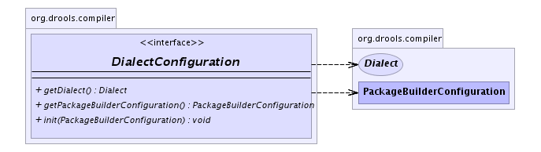

org.drools.compiler
Interface DialectConfiguration
- All Known Implementing Classes:
- JavaDialectConfiguration, MVELDialectConfiguration
public interface DialectConfiguration
Each Dialect can have its own configuration. Implementations of this class are typically
loaded via reflection in PackageBuilderConfiguration during the call to buildDialectRegistry().
This Class api is subject to change.
-
- 
init
void init(PackageBuilderConfiguration configuration)
getDialect
Dialect getDialect()
getPackageBuilderConfiguration
PackageBuilderConfiguration getPackageBuilderConfiguration()